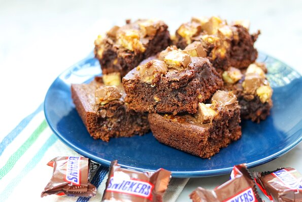

Snickers Brownies

Description
These brownies are a great way to use up some of that leftover Halloween candy! These are made with Snickers® bars, but you can substitute Milky Way® candy bars for a different variation.
Ingredients
- 1 cup white sugar
- ¾ cup all-purpose flour
- ½ cup unsweetened cocoa powder
- ½ teaspoon salt
- ¼ teaspoon baking powder
- ¾ cup butter, melted
- 3 eggs/li>
- 2 cups chocolate-coated caramel-peanut nougat candy (such as Snickers®), chopped, divided
Steps
- Preheat the oven to 350 degrees F (175 degrees C). Grease a 9-inch square baking pan.
- Mix sugar, flour, cocoa powder, salt, and baking powder together in a mixing bowl.
- Mix butter, eggs, and vanilla extract together in a separate bowl; add butter mixture to the bowl with the flour mixture and stir batter until well mixed.
- Pour 1/2 the batter into the prepared baking pan. Top with 1/2 the candy bar pieces. Spread remaining batter on top, covering candy completely.
- Bake in the preheated oven until edges are brown and center is set, about 30 minutes.
- Remove brownies from the oven and spread remaining candy bar pieces on top, lightly pressing them in while the brownies are still hot. Let brownies cool completely before serving, about 30 minutes.
Check out our other awesome recipes!